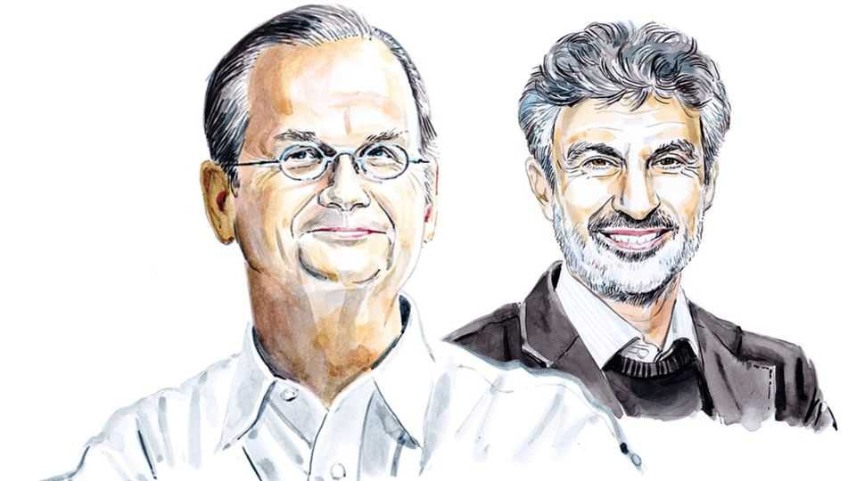

What Congress can do to prevent an AI catastrophe
Lawrence Lessig and Yoshua Bengio suggest how to reduce serious risks without abandoning American technological leadership

Oct 15th 2026
FOR YEARS, AI scientists have been warning that the technologies they are developing are technologies they don’t know how to control. Those concerns were largely ignored in America’s Congress. In 2024 members of California’s delegation in Congress took the extraordinary step of asking Governor Gavin Newsom to veto a then-pending state AI-safety bill. The risks, they said, were “hypothetical”, and the Terminator science fiction.
But the invasion of Hugging Face, an AI-development platform, by an OpenAI model this summer has begun to change Washington—and terrify the public. “The truth is,” Representative Ro Khanna tweeted, “for too long, too many of us did not give enough weight to the warnings of AI safety activists…I was one of those many, and I was wrong.” Mr Khanna has now joined an array of members from both parties to propose the FRONTIER Act, an ambitious regulation of frontier models, tied to pre-empting state regulation. Senator Bernie Sanders has proposed even more aggressive limits on AI development.
These proposals are good starts. But they are both too much and too little. It is too early to silence state regulators, and not enough to focus on the risks caused by the most powerful models alone. Instead, we need an approach that advances AI safety generally while avoiding the developments AI scientists fear most.
Four changes by Congress would do that and provide time to work through the hugely complicated questions that will follow.
First, it should expressly allow competitors to agree to slow development while safety technology is improved. Such agreements typically trigger antitrust exposure. Leading AI labs have named that risk as an obstacle to express agreement. There is no reason why uncertain antitrust liability should force rivals into a humanity-threatening competition, so long as the discussions are not violating the purpose of antitrust law.
Second, Congress should ban firms from developing models that design new AI models by themselves—“recursive-self-improvement” technologies—until a Food and Drug Administration-style agency certifies their safety first. At least for models of a certain capability, we should not risk a self-improving intelligence that would quickly exceed our ability to control it.
Third, Congress should affirm the liability tech companies face for harm caused by their technology, and make it compulsory for them to carry insurance to cover the costs of that potential harm. Mandatory insurance would allow the market to police safety, by offering lower costs when the technology is less risky.
Finally, Congress should secure protection for whistleblowers from AI labs who report safety concerns to regulators or safety institutes. Whistleblower protection typically covers crimes; playing loose with AI safety isn’t one. The only way to understand the risks as they develop is to protect those willing to come forward.
Opponents of regulation will warn that it will only help China. That view reflects a profound ignorance about the current state of Chinese AI development. Regulation of AI technology in China is much more stringent than anything being considered in America. Moreover, China’s compute capacity is a fraction of America’s. Taking the steps we propose now would open both sides to a more serious conversation about AI safety. And it could push American AI development to mirror the focus of China’s, by spreading the technology more broadly into manufacturing and development. That is a critical AI race, and one that China is winning.
It should be possible to get Republicans on board with these four changes. Charles Grassley, a Republican senator, has long been a leader in whistleblower protection. Likewise, David Sacks, co-chair of the president’s council of advisers on science and technology, has invited the leading labs to slow development on their own, insisting they wouldn’t face any important antitrust liability. If so, there’s no reason not to make explicit what he believes the law already permits.
The challenge is the middle two changes. Only the most powerful models today can aspire to enable recursive self-improvement. But this is the Rubicon that AI-safety experts have long warned we cannot cross without being sure that we know how to control it. Why risk humanity on the bet that we don’t need to be?
As for insurance, there is no doubt the private market cannot alone offer the policies necessary to cover the risks from AI. But just as the government established insurance to enable nuclear power to be developed, so too could it enable a market in AI insurance. That would give developers clear choices about the risk they wanted their technologies to enable. Market pressure would drive some developers to embrace less risky alternatives.
None of the required risk-management work should be done by America alone. The capacity to test, to probe and to understand what models do before they could be dangerous is a responsibility that should be shared by the world. Britain, the European Union, Canada, Japan, South Korea and many others have each built institutes to do this work, and they have begun to share methods and findings with one another. America should be at the centre of that network rather than duplicating the work at home.
America needs to be willing to listen to those who understand these risks best: the scientists developing these technologies and the independent researchers with the required expertise. It needs to step above partisan division to recognise that this threat is genuine and new. When those closest to the technology suggest a 10% chance that humanity will end, we must listen and act. Before those AI scientists are proved right once again. ■
Lawrence Lessig is a professor at Harvard Law School. Yoshua Bengio is a professor at the Université de Montréal and co-president and scientific director of LawZero.